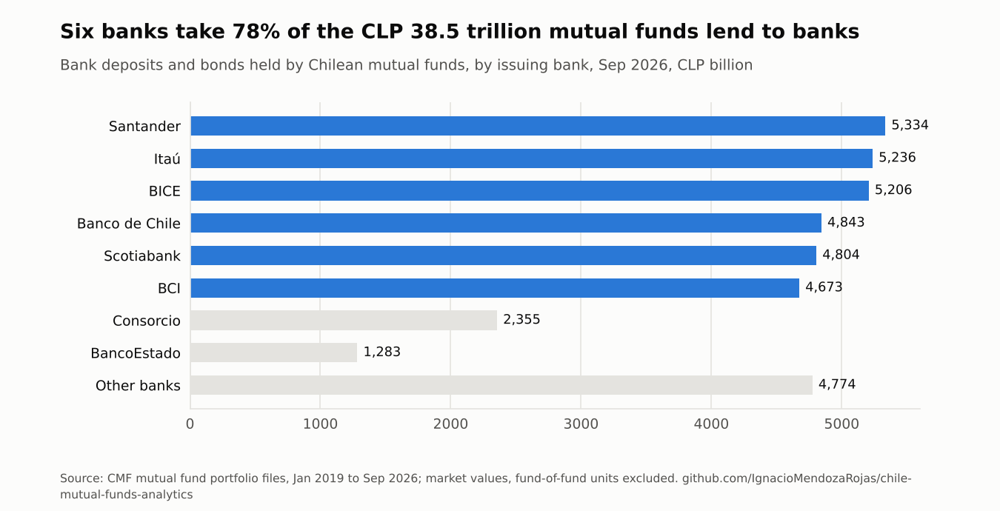

Ignacio Mendoza Rojas
Financial Risk & Modelling Analyst at Banco Ripley, based in Barcelona
I build risk and valuation models, and the data infrastructure that feeds them. Five years in banking and corporate finance: counterparty and liquidity risk at Banco Ripley, and financial planning and investment evaluation at Red Interclínica in 2023, between my two roles at the bank.
Each section below is one competency: where I use it at work, the tool I rebuilt from public theory and real data, and what it found. No employer code, data or parameters.
Counterparty credit risk & derivatives
Daily margining cuts this portfolio's peak exposure by 70%, from 19.1 to 5.7 million.
At work: the stochastic PFE models behind counterparty limits, and CVA/DVA sensitivities. Rebuilt here: a Monte Carlo engine with Hull-White rates and FX, netting and collateral, EE, PFE, Basel EEPE and CVA/DVA, each pricer checked against a closed form. Netting alone cuts CVA by 26%.

Liquidity risk & funding
Six banks take 78% of the CLP 38.5 trillion Chilean mutual funds lend to banks, and that money has run before: 25% in one month.
At work: deposit decay, ILAAP projections under Basel III and cash-flow stress tests. Rebuilt here: every mutual fund's holdings since 2019, read from regulator files as a funding question: concentration by bank, maturity (56% within a year) and observed run-off rates of 25% in a month and 63% in a year, a calibration for a stress scenario. Updated monthly by a scheduled workflow.

Credit risk & financial statement analysis
Through the Isapre crisis, Clínica Las Condes' credit-loss allowance rose from 12.6% to 53.8% of its receivables; its peers barely moved.
At work: competitive benchmarking of Chilean clinic groups at Red Interclínica, built by hand in Excel. Rebuilt here: the same benchmark from every quarterly XBRL filing at the CMF since 2016, with receivables ageing, cost of risk, restatements logged and the order in which each indicator broke. Collection days moved first, in 2022. Updated twice a month.

Equity valuation & investment analysis
At about US$60, SQM's share price implies lithium at US$25,000 a tonne for the long run. My valuation, on a US$15,000 deck, gives US$42.
Background: my team won the CFA Institute Research Challenge for South America in 2021 covering SQM, and I evaluated projects on a clinic group's investment committee (NPV, IRR, payback). Rebuilt here: a segment-by-segment valuation engine from public filings, DCF and residual income, 10,000 simulated price paths, and the 2020 valuation held against what happened next. The implied lithium price is recomputed every week.

Read the October 2026 report The 2020 valuation, backtested equity-research-engine: code
Data engineering & automation
Every analysis above updates itself: regulator files without an API, checked before they reach a model.
At work: fund and portfolio data collection with Python and web scraping, and controls for a production database migration. Rebuilt here: a tested pipeline for the CMF portal (93 months rebuilt unattended, quality gates that caught real data errors) and a tool that proves a database migration lost nothing.
- cmf-ffmm-etl
Browser-like client for a portal with no API, seven quality checks, idempotent loads to any SQL database or a typed table in memory. - db-migration-validator
Structure, row counts, order-independent content fingerprints and grants, across Oracle, SQL Server, PostgreSQL and MySQL; fails the cutover on any critical finding.
Corporate finance & unit economics
The recipes said food cost was 17% of sales. The purchases said 36%, and break-even sales were 30% higher than planned.
At work: financial planning for four clinics and €11M of capex at Red Interclínica. Rebuilt here: menu engineering, yield-adjusted ingredient usage and break-even on the real operating data of a restaurant I ran in 2023, anonymised.

Experience and education
| 2023 – present | Financial Risk & Modelling Analyst, Banco Ripley, Chile |
| 2023 | Strategy & Investment Analyst, Red Interclínica, Chile |
| 2021 – 2023 | Financial Risk Analyst, Banco Ripley, Chile |
| 2025 – 2027 | MSc in Business Research, Universitat de Barcelona |
| 2020 – 2021 | MSc in Finance, Universidad Adolfo Ibáñez |
| 2016 – 2019 | BSc in Business Administration and Economics, Universidad Adolfo Ibáñez |
Winner with my team, CFA Institute Research Challenge, South America Regional Final, 2020–2021.